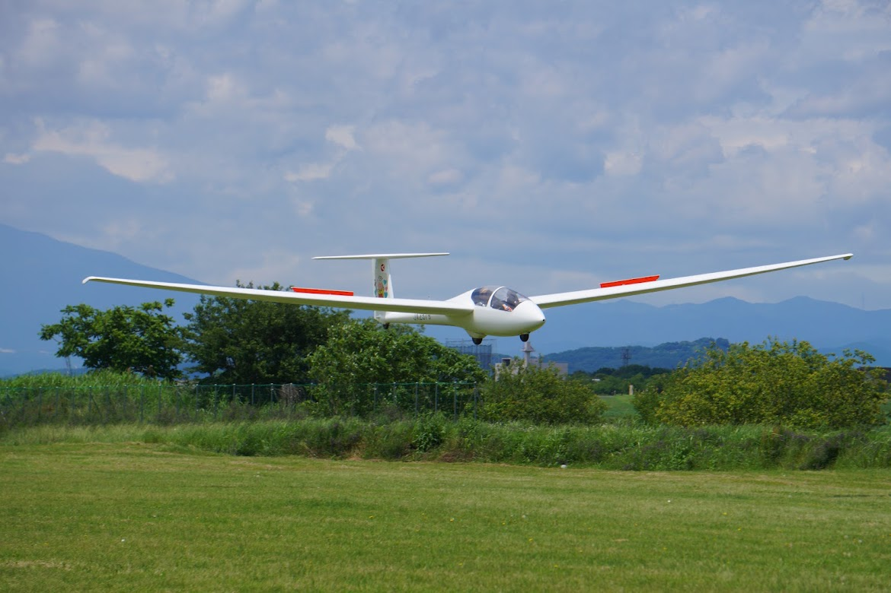

Tokyo Metropolitan University
Aviation Club
合宿期間：2026/7/11～20206/7/12
投稿日：20206/7/12
2年の松尾です。
4/18~4/19に関千さんと合同合宿を行いました。
今合宿からは学年が変わり、卒業した先輩もいれば新一年生たちが体験搭乗に来てくれたりと新しい風が吹いた合宿となりました。また、3年の武居先輩がファーストソロにでました!
【1日目】
ファーストソロに出た武居先輩!
部員一同からの水浴びの祝福を受けました!改めておめでとうございます!

ファーストソロを見守る部員一同。「なかなか降りて来ないねぇ～」と話しているようです。
【2日目】
1日目に続き2日目も体験搭乗に多くの学生がやってきてくれました。みなさんにとって楽しい思い出になってくれていたら嬉しい限りですね。
随時入部大募集中なので、興味のある方はいつでも連絡ください!
2年の鈴木がフライト中に珍しい鳥に遭遇!
今合宿にご協力いただいた皆様、ありがとうございました。
これからも何卒よろしくお願いいたします。 東京都立大学2年
松尾和弥
< 一覧に戻る